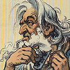

Thou Shalt Not Envy

Published
by George Hess
I have struggled for the longest time to understand why so many women compare themselves to the air–brushed covergirls that grace our checkout lines and newsstands. To me, it would be like comparing apples to wax oranges. Does–not–compute. One is real, one is fake. One tastes nice to kiss, the other like newsprint… not like I ever tried kissing the Cameron Diaz 1996 edition of Rolling Stone… wouldn't know anything about that.
But maybe it does make sense?!
For I found myself in the exact same situation as my female counterparts (minus the sex change). There I was, minding my own business, watching TV, and then he comes on. Oh how I dislike him! But it's not the pearly white teeth that get to me. Nor the chiseled abs. I could care less about that jawline. It's the shave! I want it, nay, need it! Oh sure, we all know he's had a laser remove every last follicle from his face. I'm not stupid. I know there's not even a blade in there. But as the (faux) razor glides across his adam's apple without hitting the slightest speed bump I am filled with envy. I want the impossible, I purchase the impossible, and then I attempt the impossible – a really, really, close shave.
I am optimistic at first. Never mind the prior attempts. Those must have failed due to faulty equipment, this time it will be different. I put my best shave face on. Jaw protruding out for good angles, upper lip filled to 20psi, and I commence to tear my skin apart with a triple stacked blade. The sting is just a reminder of how lazy I've become. “From now on, I'm going to shave everyday!”, I say to myself. How else could I justify spending so much on a device that has been around almost as long as the face.
After a solid 10–15 minutes of hacking away last week's 5 o'clock shadow I am ready for inspection. But alas, I look nothing like ol' laser–razor boy. Instead, I bare an unsettling resemblance to that of a man stricken with the pox. Patchy, bloody, and now plain pissy, I blame genetics and storm off, more determined than ever to grow a beard. I resign to the fact that I am stuck with this face and the only memories of me will be tainted with a sandpaper like texture.
As I slump back down into the recliner a magazine ad catches my eye. “More Than Just A Blade” – hmmm, I'm listening…